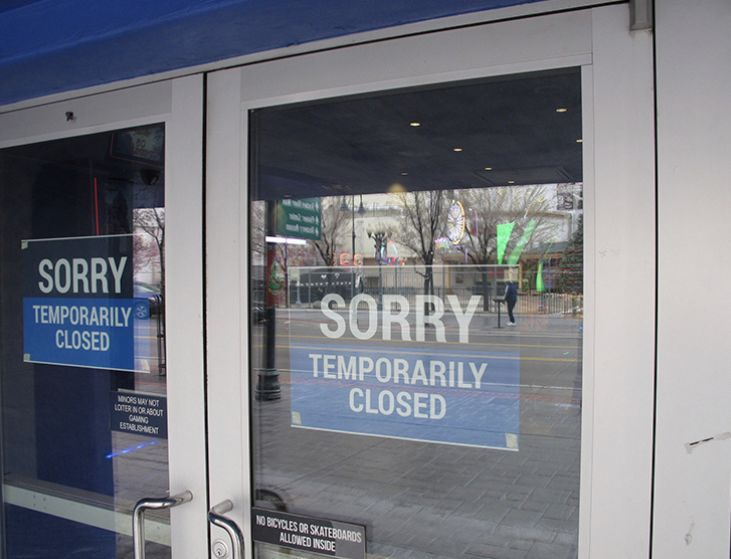
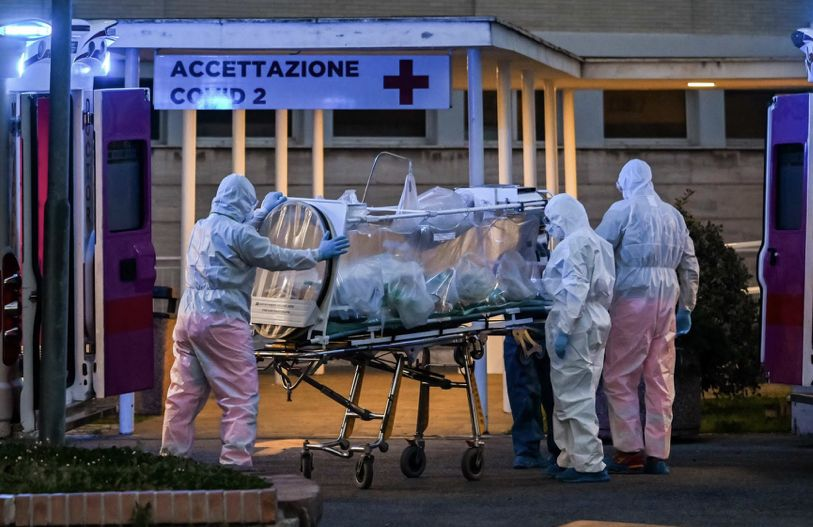
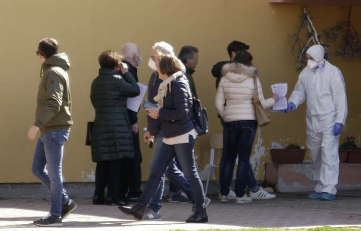
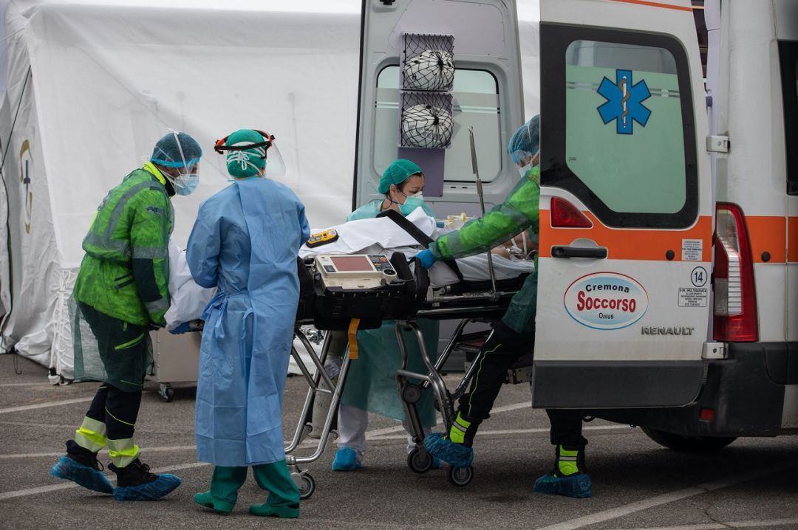
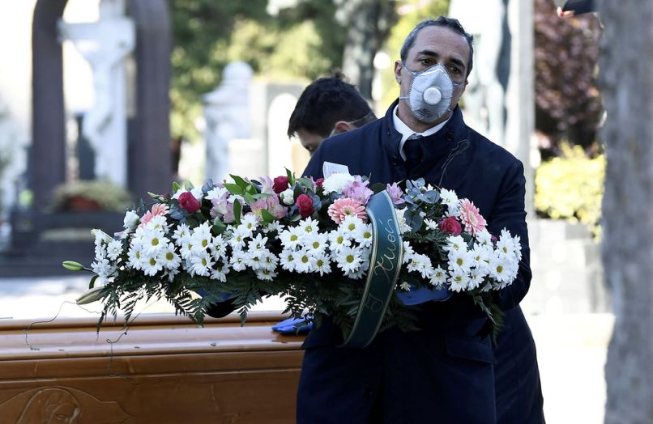
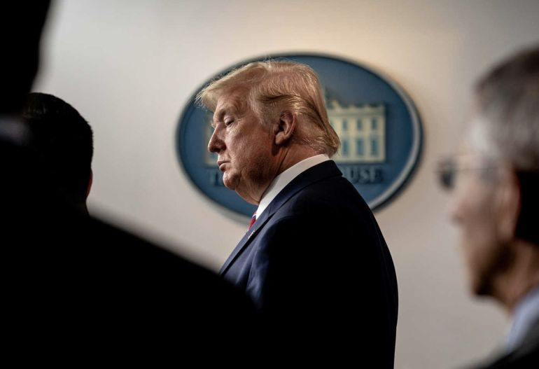

叶青：建议设立公共卫生安全副省长
原文链接 备份链接 非常时期，武汉成了全国人民挂念、祈福的城市。封城后，武汉人民的真实生活是什么样？ 随着疫情援助的展开，又有哪些容易忽略的问题？ 正和岛自1月26日起特别推出《叶青：我在武汉疫区的第N天》专栏。叶青是一位定居武汉40年的 …
编者按：继在《三联生活周刊》2020年第12期独家中文刊发《阻止全球灾难，需要重获失去的信任》一文后，以色列历史学家尤瓦尔_·_赫拉利（代表作《人类简史》三部曲） 再次在本刊独家中文刊发最新署名文章，表达他对这场疫情危机与人类社会未来之关系的思考。新的文章观点概要如下：
1.近年来，一场关于个人隐私的激烈争论一直在进行。冠状病毒危机可能是这场争论的转折点。因为当人们在隐私和健康之间做选择时，通常会选择健康。实际上，让人们在隐私和健康之间进行选择是问题的根源。因为这是一道错误的选择题。我们可以并且应该同时享有隐私和健康。
2.我们当然应该利用新技术，但是这些技术应该赋予公民权力。当人们谈论监控时，请记住，同样的技术，公共当局可以用它监控个人，个人也可以用它监控公共当局。
3.现任美国政府已经放弃了领导者的职责。如果美国留下的空白未被其他国家填补，结果将是可怕的——遏制当前的流行病将变得更加困难，疫情带来的负面影响将在未来几年继续毒害国际关系。

《人类简史》作者尤瓦尔·赫拉利
人类正在面临全球危机——也许是我们这代人经历的最大危机。公众和政府在接下来几周所做的决定可能会影响世界未来几年的样貌。这些决定不只会影响我们的医疗体系，还会影响我们的经济、政治和文化。面对危机，我们必须迅速、果断地采取行动，但是也该考虑到这些行动带来的长远影响。当在不同选项间进行抉择时，我们不只要考虑如何克服眼前困难，更要自问危机过后我们生存的世界会变成什么样子。是的，危机终将过去，我们大多数人会幸免于难——但是我们生活的世界将不再一样。

在家隔离的意大利民众
许多短期的紧急措施将变成生活的常态。这就是紧急情况的性质——加速历史的进程。有些决策在正常情况下需要花费数年审议，但在紧急情况下几小时就被通过了。不成熟的、甚至危险的技术被赶鸭子上架，因为什么都不做的风险更大。整个国家都成了大型社会实验中的小白鼠。所有人转向远程通讯和居家办公会带来什么后果？大中小学改为在线教学会带来什么后果？在正常时期，政府、企业和教育机构绝不会同意进行这种实验。但现在属于非常时期。

临时关门的店铺
在非常时期，我们面临两个格外重要的抉择。第一是在控制和公民赋权间做抉择；第二是在民族主义孤立和全球团结间做抉择。
我们可以并且应该同时享有隐私和健康，而非对立
——“近年来，一场关于个人隐私的激烈争论一直在进行。冠状病毒危机可能是这场争论的转折点。因为当人们在隐私和健康之间做选择时，通常会选择健康。实际上，让人们在隐私和健康之间进行选择是问题的根源。因为这是一道错误的选择题。我们可以并且应该同时享有隐私和健康。”
为了阻止流行病爆发，所有人都需要遵守一些指导方针。想要控制疫情，主要有两个方法，其中之一是控制，惩罚破坏规则的人。如今，是人类历史上头一次，技术做到了时刻监视所有人。在与冠状病毒疫情的抗争中，通过严密监控人们的智能手机，数亿个面部识别摄像头，并要求人们报告体温和身体状况，不仅可以快速识别出疑似冠状病毒携带者，还可以追踪他们的活动范围和密切接触者。此外，一系列的移动应用程序还随时提醒市民与感染患者的距离。
这种技术的应用不仅限于东亚。以色列总理内塔尼亚胡最近授权以色列国家安全总局（辛贝特）采用监控技术（该技术通常用于反恐），追踪冠状病毒患者。当以色列议会拒绝批准该措施时，内塔尼亚胡通过颁布“紧急状态法令”，迫使该措施得以实施。

你可能会争辩说这些不是新鲜事儿。近年来，政府和企业都在使用越来越先进的技术来跟踪、监控和操纵。如果我们不加小心，冠状病毒的流行可能会成为监控历史上的重要分水岭——很多国家原本抗拒的大规模监控工具部署会变得合理和正常；监控也会发生从“皮肤上”到“皮肤下”的戏剧性转变。
原先，当你的手指划过智能手机屏幕，并点击链接时，企业和政府想知道你的手指到底在点击什么。但是疫情当前，关注重点已经转移。现在，是想知道你手指的温度及其皮肤下的血压。这是历史性的转变。
跟踪人们在现实和虚拟世界中的行为可以为政府和企业提供大量信息，但比起从生物识别技术中收集的信息，这不算什么。例如，如果你知道我点击的是福克斯新闻（Fox News）的链接而不是有线电视新闻网（CNN）的，你可以由此了解我的政治观点甚至个性。但是，如果你可以在我观看视频的过程中监控我的体温、血压和心率变化，你就可以知道使我发笑、哭泣或非常生气的原因。

请务必记住，愤怒，喜悦，无聊和爱是生物现象，就像发烧和咳嗽一样。识别咳嗽的技术也可以用来识别笑声。如果企业和政府开始大量收集我们的生物特征数据，他们就能比我们更了解我们自己。这样一来，他们不仅可以预测我们的感受，还可以操纵我们的感受并向我们推销任何一个产品或者一个政客。生物特征监控将使剑桥分析公司（Cambridge Analytica）的数据入侵策略看起来像石器时代的技术。
你当然可以争辩说，允许进行生物特征监视只是在紧急状态下的临时措施。一旦紧急状态结束，它将随之消失。但是临时措施往往比紧急状态要持久，尤其新的紧急状态层出不穷。例如，我的祖国以色列在1948年的独立战争期间宣布进入紧急状态，这一时期采取了一系列临时措施，大到新闻审查和征用土地；小到制作布丁的特殊规定（我不是在逗你）。以色列独立战争早就取得了胜利，但以色列从未宣布紧急状态结束，并且也没有废除了1948年的许多“临时”措施（关于制作布丁的紧急法令在2011年才被废除）。
即使新增冠状病毒感染者降至零，一些渴望数据的公共当局也可能会继续使用生物特征监测系统，因为冠状病毒有可能再次爆发；或者因为中部非洲正在出现新的埃博拉病毒株；或是因为……你懂的。近年来，一场关于个人隐私的激烈争论一直在进行。冠状病毒危机可能是这场争论的转折点。因为当人们在隐私和健康之间做选择时，通常会选择健康。

实际上，让人们在隐私和健康之间进行选择是问题的根源。因为这是一道错误的选择题。我们可以并且应该同时享有隐私和健康。最近几周，韩国和新加坡实施了一些成功的抗疫措施。这些国家虽然使用了追踪应用程序，但它们更多地依赖于广泛的病毒检测，诚实的疫情报告以及公众的自愿合作。
集中监控和严厉惩罚并不是使人们遵守准则的唯一方法。当公共当局告知民众科学事实，并且民众信任这些事实时，民众也可以做出正确决定。一个奋发进取和信息透明的人群通常比受监管的无知人群更强大、更有效率。
例如，用肥皂洗手是人类卫生史上最伟大的进步之一。这个简单的动作每年可以挽救数百万人的生命。虽然我们把这当作理所当然，但直到19世纪，科学家才发现用肥皂洗手的重要性。以前，哪怕医生和护士，也做不到先洗手再进行手术。今天，数十亿人每天洗手，不是因为他们惧怕肥皂警察，而是因为他们了解事实。我用肥皂洗手是因为我听说过病毒和细菌，我知道它们会引起疾病，但可以被肥皂杀死。

但是这样高水平的配合与合作需要信任。人们需要信任科学、公共当局以及媒体。在过去的几年中，不负责任的政治家故意破坏了对科学、公共当局和媒体的信任。正常情况下，已被侵蚀多年的信任不可能在一夜之间重建。但现在不属于正常情况。在危机时刻，想法也会迅速变化。比如，你和兄弟姐妹难免会发生激烈的争吵，但当出现紧急情况时，你们就会突然意识到彼此间隐藏的信任和友善，于是开始互相扶持。要建立人们对科学，公共当局和媒体的信任，现在还为时不晚。
我们当然应该利用新技术，但是这些技术应该赋予公民权力。我完全同意监测自己的体温和血压，但这些数据不该用来创造功能强大的政府，而应该用来帮我做出更明智的个人选择，并为政府的决策提供依据。如果我每天24小时追踪自己的健康状况，我不仅可以了解自己是否对他人的健康构成风险，还可以了解哪些习惯对我的健康有益。如果我可以访问和分析有关冠状病毒传播的可靠统计数据，我将得以判断政府是否披露真相、是否采取正确的措施对抗疫情。当人们谈论监控时，请记住，同样的技术，公共当局可以用它监控个人，个人也可以用它监控公共当局。

在未来的日子里，我们每个人都应该选择相信科学数据和医疗专家，而不是相信毫无根据的阴谋论和自私自利的政治家。如果我们未能做出正确的选择，我们会发现自己放弃了最宝贵的自由，还以为这是守护健康的唯一途径。
我们需要全球性计划
——“如果美国留下的空白未被其他国家填补，结果将是可怕的——遏制当前的流行病将变得更加困难，疫情带来的负面影响将在未来几年继续毒害国际关系。”
我们面临的第二个重要选择存在于民族主义孤立与全球团结之间。疫情本身和由此产生的经济危机都是全球性问题，只有全球合作才能有效解决。
首先最重要的是，为了战胜病毒，我们需要在全球范围内共享信息。这是人类相对于病毒的巨大优势。中国和美国的冠状病毒不能“交流”如何感染人类，但是中国可以传授美国很多关于应对冠状病毒的宝贵经验。意大利医生清晨在米兰的发现，很可能会在晚上挽救德黑兰某人的生命。当英国政府对几项政策犹豫不决时，它可以向一个月前面临过类似困境的韩国政府征求意见。但是要实现这一点，我们需要全球合作与全球信任的精神。**各国应该自愿公开分享信息、谦虚地寻求建议，并且信任其他国家分享的数据和见解。
**
我们还需要全球努力来生产和分配医疗物资，尤其是病毒检测试剂盒和呼吸机。与其各国都试图在本地生产和囤积物资，不如在全球范围内协调一致努力，这样就可以极大地提高生产效率，并确保救命的物资被更公平地分配。就像国家在战时会将关键产业国有化一样，人类与冠状病毒的抗争可能需要我们将关键的生产线“人性化”。病例不多的富裕国家应该自愿向病例较多的较贫穷国家输送医疗物资，并相信如果以后需要帮助的话，其他国家也会伸出援手。

我们会考虑采取类似的全球努力来集结医疗人员。当前受疫情影响较小的国家可以派遣医疗团队到疫情严重的地区，为他们提供帮助并分享宝贵经验。如果这之后疫情发生转移，援助就会开始朝反方向流动。
经济方面也需要全球合作。考虑到经济和供应链的全球属性，如果各国政府各行其是，对别国置若罔闻，结果将是一团混乱和危机加深。我们需要一项全球性的计划，而且我们得抓紧时间了。
另一个要求是就国际旅行达成全球协议。将国际旅行暂停数月之久将给世界各地带来巨大困难，并将阻碍人类与冠状病毒的抗争。各国需要协同合作，至少应该让一些重要的旅客（如科学家，医生，记者，政治家，商人）继续过境。各国可以达成全球协议，规定只有身体健康的旅客才能成行。如果你知道乘坐飞机的旅客已经经过严格检查，那么你会更愿意他们入境你的国家。
遗憾的是，目前各国几乎都没做到这几点。国际社会陷入了集体瘫痪——就像是一个没有大人的房间。早在几周前，人们就期望看到全球领导人举行紧急会议，提出一项共同的计划来对抗冠状病毒。但事实是，七国集团领导人在本周才组织了一次视频会议，且没有制定任何计划。
在之前的全球危机（例如2008年全球金融危机和2014年埃博拉疫情）中，美国担当了全球领导者的角色。但是现任美国政府已经放弃了领导者的职责。它已经向世界表明，比起全人类的未来，它更关心“美国的伟大”。

现任美国政府连其最亲密的盟友都抛弃了。当它禁止所有从欧盟出发的旅行者时，它懒得给予欧盟应有的事先通知——更别提就这一严厉措施与欧盟进行磋商了。据说，它向德国一家制药公司出价10亿美元，欲购买一种新的Covid-19疫苗的专利权，这使德国震惊不已。即使美国现任政府最终改变立场并提出一项全球行动计划，估计也没什么人会追随一个从不承担责任、从不承认错误、一切功劳归自己、所有责任归他人的领导人。
如果美国留下的空白未被其他国家填补，结果将是可怕的——遏制当前的流行病将变得更加困难，疫情带来的负面影响将在未来几年继续毒害国际关系。然而，每次危机也是一个机遇。但愿当前的流行病能帮人类认识到全球不团结带来的严重危险。

人类需要做出选择。是在不团结的道路上走下去，还是选择一条全球团结的道路？如果我们选择不团结，这不仅会延长当前的危机，还有可能导致更严重的灾难。如果我们选择全球团结一致，那不仅会是抗击冠状病毒的胜利，也会是抗击所有二十一世纪可能袭击人类的未来流行病和危机的胜利。
（赫拉利个人微博：@尤瓦尔诺亚赫拉利。作者授权译者：陈光宇。全文将刊登于《三联生活周刊》2020年第13期）

相关阅读
独家 |《人类简史》作者赫拉利：
阻止全球灾难，需要重获失去的信任
大家都在看


⊙本文版权归Yuval Noah Harari所有，欢迎转发到朋友圈，转载请联系后台。
点击图片，一键下单
「*全球经济 熔断时刻*」

***************▼ 点击阅读原文，******************************进入周刊书店******************************，购买更多好书。***************
原文链接 备份链接 非常时期，武汉成了全国人民挂念、祈福的城市。封城后，武汉人民的真实生活是什么样？ 随着疫情援助的展开，又有哪些容易忽略的问题？ 正和岛自1月26日起特别推出《叶青：我在武汉疫区的第N天》专栏。叶青是一位定居武汉40年的 …
原文链接 备份链接 中国国内连续2日无本地新增。全球另有6个国家感染病例过万，美国新增病例已升至全球第二。联合国称这是75年来前所未有的全球健康危机。全球约30亿人缺少肥皂和自来水等抗疫基本武器 文 |《财经》数据研究员 徐进 图 |《 …
原文链接 备份链接 文/范欣 3月以来，美股接连发生熔断，让全球投资者都惊出了一身冷汗，连股神巴菲特都惊叹“活久见”，芝加哥期权交易所（CBOE）恐慌指数VIX也在3月17日超过2008年金融危机时的高点，创下收盘记录新高。受此影响，连黄 …
原文链接 备份链接 近日 网上流传的这样一段视频 引发网友热议 网传信息显示，据了解，该女子为澳大利亚籍华人，返京后不按规定居家隔离外出跑步且不戴口罩。面对社区防疫人员劝说，该女子不但不听劝告，还大喊“救命骚扰”。随后民警赶到对其发出了 …
原文链接 备份链接 全球疫情的进一步扩散，将对全球经济带来较大的冲击，而由于国际局势已经与全球金融危机爆发时大为不同，全球合作的前景不容乐观，新冠疫情有可能随之会给全球经济带来第四次冲击波 文 | 何帆 朱鹤 许佩玉 黄婉菁 新冠病毒已经 …